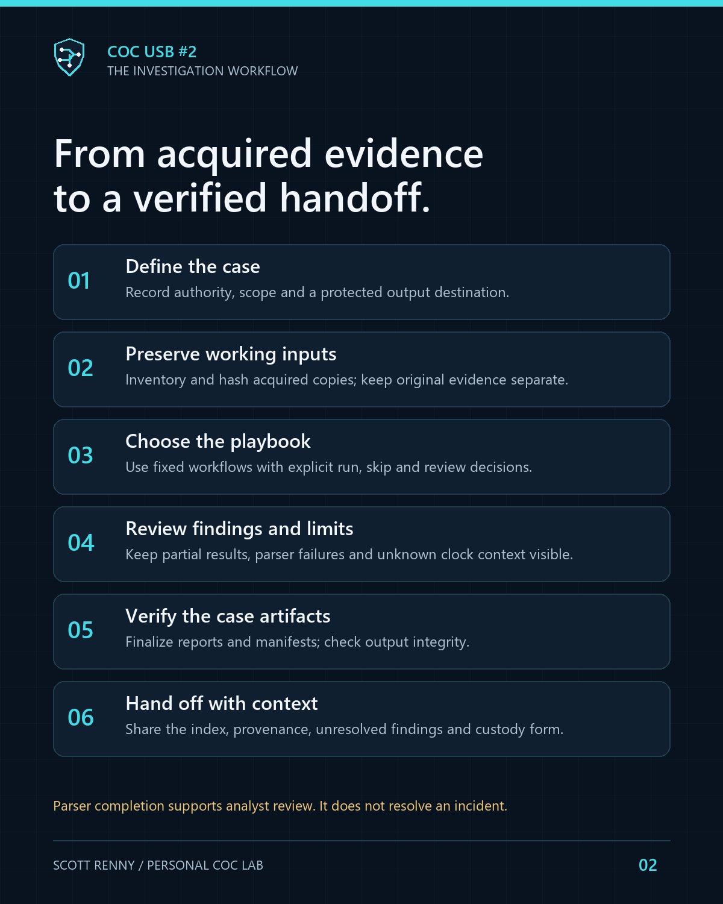

OCTOBER 14, 2026 · COC / INVESTIGATION ENGINEERING
Building a DFIR workflow on a USB
The useful part of this build was connecting tools, evidence handling and analyst decisions into a repeatable process.
I started with an existing 64 GB USB and a familiar menu from my first technician drive. For USB #2, I wanted a clearer purpose: digital forensics, incident response and static malware analysis. That meant deciding how an investigation should move through the toolkit, how results would be recorded, and where automation should stop.
Choosing by workflow
The toolkit grew across artifact examination, email and URL review, event timelines, acquired network captures, configuration/signature checks and lab transport. I kept USB #1's repair/support role separate. Each addition needed a stated input, bounded behavior, an output I could review and an honest readiness status.
I stopped treating unused capacity as a reason to keep adding packages. After the last owner-run update the drive had 18.58 GiB free. That reserve gives the toolkit room for maintenance without changing its role into an evidence repository.

Building the operational layer
Python handles bounded acquired-input processing and structured outputs. PowerShell connects the workflows to the centered console and shared case engine. A guided selector offers fixed offline steps, while the operator chooses run, skip or review. Each executed step has its own case; a progress record preserves the outcome and links to verified artifacts.
I also added a harmless practice check with known expected results, an evidence handoff packet and an offline freshness dashboard. The dashboard preserves unknown version currency instead of guessing that a staged package is current.
Even cleanup needs provenance
Deleting generated case logs changes the case. The manager therefore previews exact eligible paths and sizes, requires an explicit selection and confirmation, and verifies a full original-case archive first. It retains the original manifest and a cleanup receipt before verifying the revised case. Acquired system/evidence logs and unknown files are excluded.
Archive only keeps the original case intact. The ZIP still needs protected storage, cleanup is not secure erasure, and keeping a complete archive can use more space than the removed logs free. Those limits belong in the interface and documentation.
What the validation actually establishes
The local suite passed 128 Python tests, including 25 operations tests. Seven operations workflows and five earlier response workflows finalized synthetic cases and verified artifacts. Controlled guided-decision tests used a mocked launch boundary and the real case core. Failure paths covered changed/untracked files, stale confirmation, competing sessions, archive failure and interrupted cleanup recovery.
The owner-run deployment reported that the latest 35 changed files were copied and read-back verified. That confirms the update contents, not every tool's behavior on arbitrary evidence. Full live queries, broad GUI compatibility, real evidence and the separate Zeek/Suricata/Plaso lab workflow remain outside that acceptance. Boot testing was excluded by the owner.
Publishing the engineering work
The public edition shares original source, selected synthetic fixtures, workflow documentation and a sanitized status record. It leaves vendor payloads, original transcripts, device identity and the operative installed manifest outside the repository. A public clone is a source edition, not a ready-to-run forensic USB.
My main takeaway is that a portable toolkit becomes easier to trust when its decisions, outputs and limits remain visible. The next improvements should come from a specific investigation gap or validation result.
Read the source and validation record ↗ · Project case study
← Back to the engineering journal